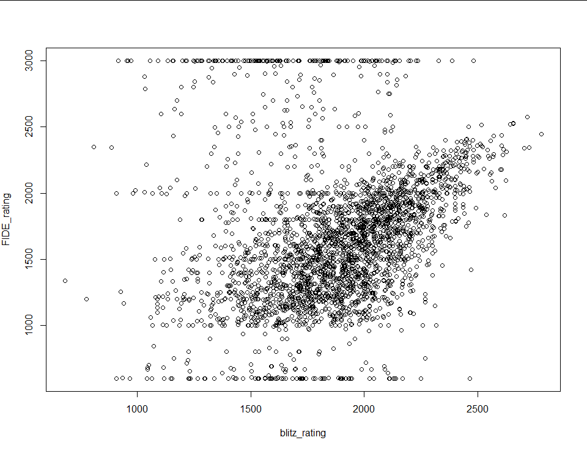
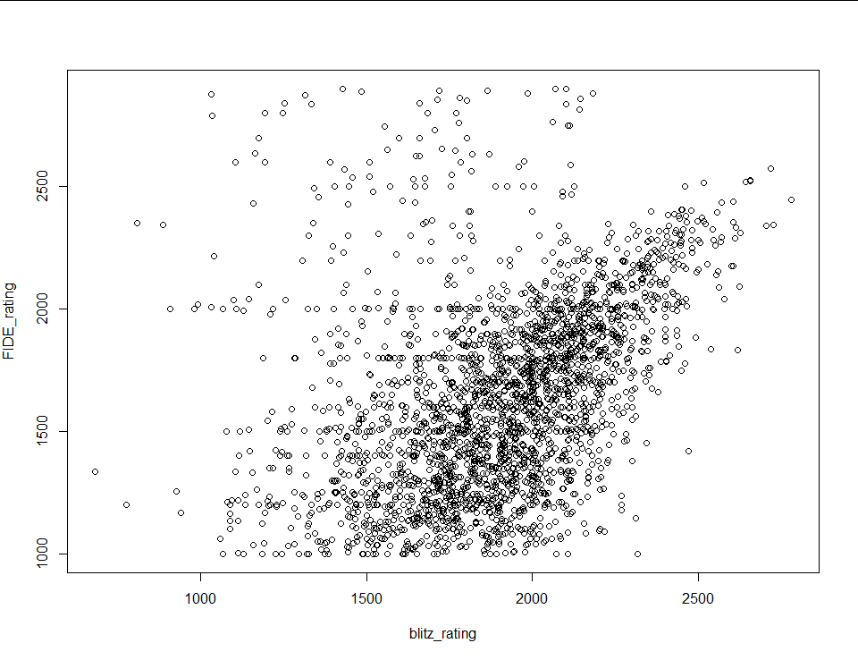
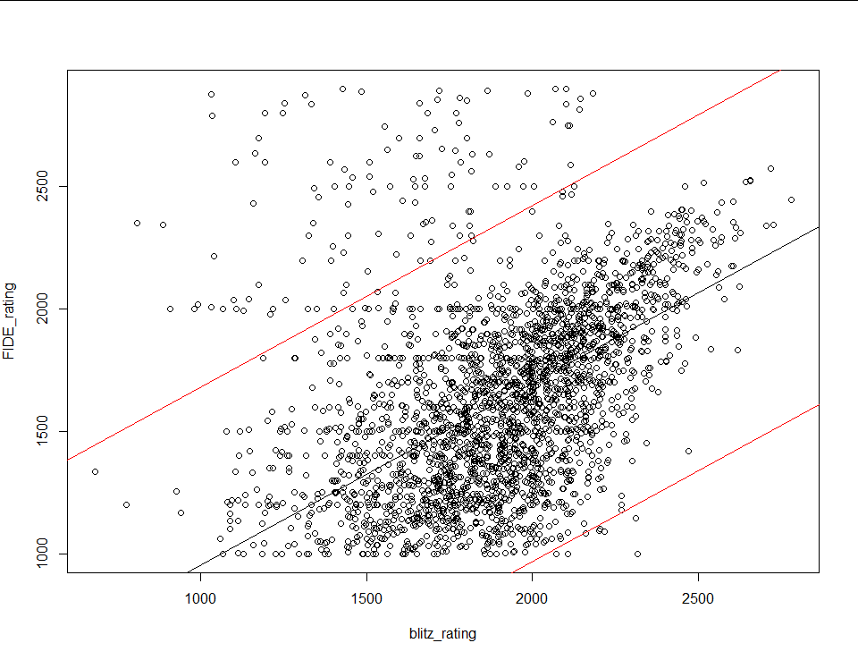
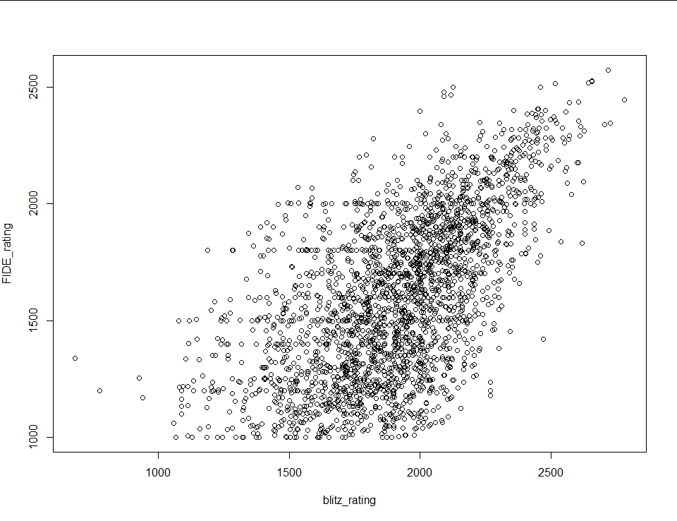
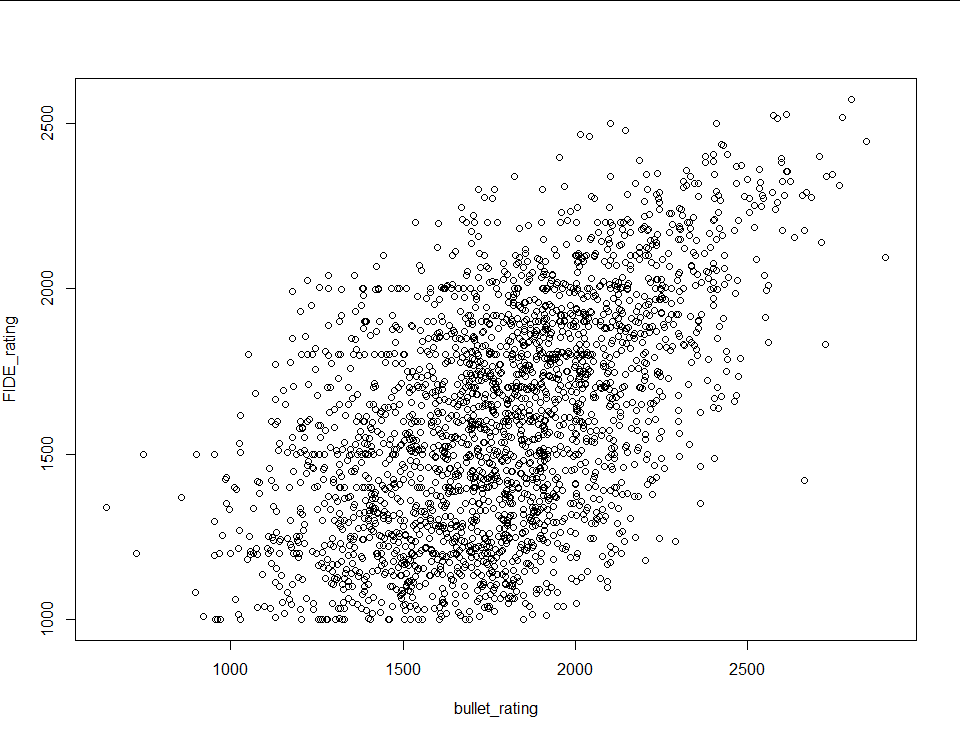
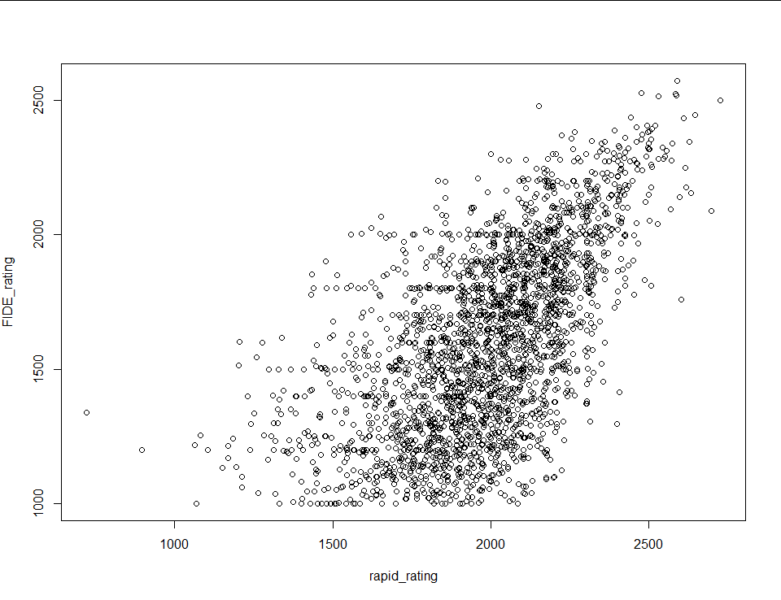
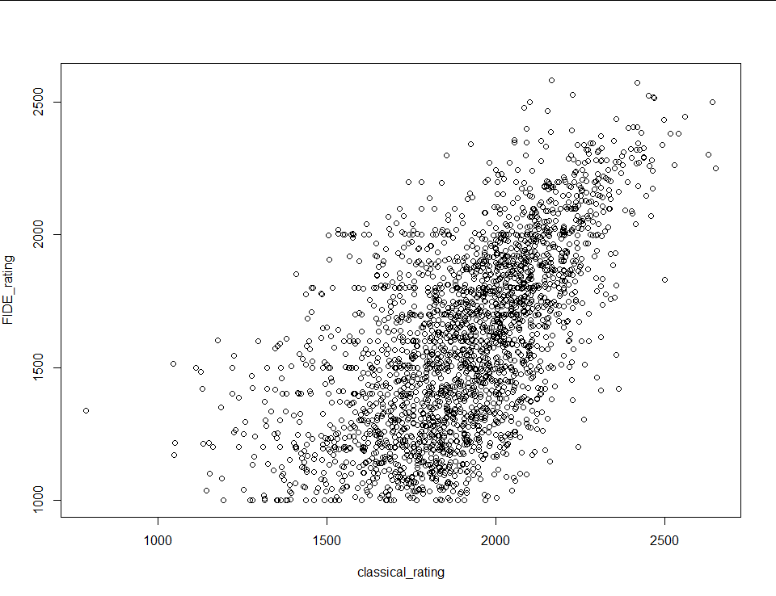

TLDR
This site uses your ratings in each time control category that you have at least 20 games as inputs to linear regression models in order to estimate a FIDE rating. The models were generated from a data set of about 28,000 users who have listed their FIDE rating on their lichess profile.
About the Data
I started by downloading the public information of a little over a million lichess users (this took a while) and then created a dataset with only the users who listed a FIDE rating in their profile. Only about 3% of users included a FIDE rating in their profile, so the dataset came out to around 28,000 observations. Before fitting a linear model I removed every data point that had fewer than 50 games played in the time controls that I was using for the explanatory variables. Below is a scatterplot of FIDE rating plotted against blitz rating.
Because the FIDE ratings are self reported it’s a little messy. There is clearly a relationship, but there’s a lot of cleanup that has to be done. First, I removed every data point with a FIDE rating above 2900 (the record is 2882) and below 1000 (because that’s the floor in the FIDE rating system). The plot is already looking better:
There’s still a lot of noise in the top left, which makes sense because I would expect people to pretend to be stronger players than they are and not weaker than they are. To clean it some more I fit a linear model to the data and removed every point with a residual greater than two standard deviations from the median (chop at red lines):
The result looks like this:
Beautiful. If I were doing this data analysis for interpretive reasons that last step would likely have been me overstepping as an analyst, but all I’m trying to do is create a model with strong predictive power. The final step is to generate a least absolute distance model using r’s rq() function and call it a day.
Unfortunately blitz rating isn’t the only explanatory variable I’m working with. I also have bullet, rapid and classical ratings, and every combination of the four (for a total of 15 models). For the other three single regression models I repeated the steps above. All four resulting scatter plots follow:
|  | |
|  |  |
The only thing I did differently for the multiple regression models (the models with more than one explanatory variable) was use the r’s step() function to remove redundant variables each time I fit a model. Unfortunately I can’t show the results in a scatterplot, because scatterplots only have two dimensions. The models have a Pearson correlation coefficient of 0.626 at best to 0.538 at worst.
If you have any questions, comments, or words of encouragement feel free to shoot an email to duckunreal@gmail.com